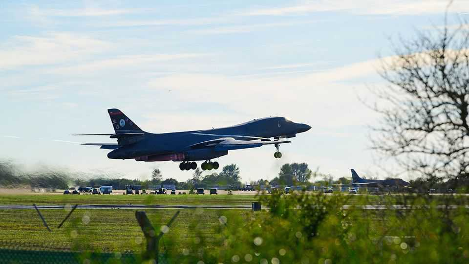

American bombers have abandoned a British base
Their departure poses more questions than answers

Oct 8th 2026
Uppermost in the minds of American commanders who ordered around a dozen B-1 bombers to leave their temporary base at RAF Fairford on October 4th was the fear of an Iranian plot to attack them with drones. J.D. Vance, America’s vice-president, said the decision sprang from an “abundance of caution”. It came after President Donald Trump claimed to have had intelligence of a specific threat. “They didn’t fly out by accident,” he said.
Britain gave the Americans permission, soon after the Iran war began in February, to fly “defensive” missions from Fairford and other bases against targets such as Iranian missile launchers. In July Iran threatened that “any base used to launch attacks on Iranian territory is a legitimate target for our forces”—a threat the British took seriously, and for good reason. Their intelligence services reckon Iran has been behind a growing number of attempted “hybrid” attacks in Britain.
Ukraine’s extraordinary Operation Spiderweb, in June 2025, showed how quite vulnerable airbases can be. The Ukrainians smuggled more than 100 quadcopter drones deep inside Russia, then used them to destroy as many as 14 irreplaceable bombers and reconnaissance aircraft. Ever since, air forces everywhere have feared copycat attacks. In August an attempted drone attack on Ukrainian transport aircraft at Leipzig airport, attributed to Russia, very nearly succeeded.
The sudden departure of the B-1s from Fairford, in the Cotswolds, came after armed police arrested five British men in their 20s on September 28th. They had been tipped off by a local farmer that the men had driven three vans near to the perimeter of the base. The five were arrested on suspicion of preparing a terrorist act using explosives—though the police search revealed only cans of petrol.
All five were released on bail some 24 hours later; the police say they are under a “hugely complex” investigation “interrogating multiple lines of inquiry”. On September 30th Andy Burnham, the prime minister, confirmed “strong indications” that Iran was behind the incident but declined to say more. To many American eyes, British officials appear reticent and somewhat bumbling. A day later a sixth man, a dual British-Iranian national, was arrested on suspicion of preparing a terrorist act but was also later released on bail. On October 6th a seventh arrest followed.
Much remains opaque. Presumably something serious prompted the B-1s’ sudden flight. But it is hard to see how that fits with the seemingly amateurish shenanigans of the “Fairford five”. Conceivably, the Iranians were planning a sophisticated operation of the kind required to send explosive-laden drones into the base. But if so, why would they give the game away with what looks, at best, like a dummy run to test Fairford’s security?
The petrol containers pose another riddle. They could have been used to start a fire close to the base’s fence, but that could not have done much damage. Some have speculated that the aim was to cause a diversion, facilitating a more serious attack elsewhere along Fairford’s 13.5-mile (22km) perimeter, which was cancelled when the men were apprehended. But there have been no reports of others having been spotted. Nor has any tell-tale gear, such as the antenna planted in a tree near Leipzig to act as a signal booster, been found.
Moreover, it is highly questionable whether Iran’s operatives in Britain would have been able to orchestrate a Spiderweb-style drone attack with any chance of success. They are often recruited via social media and lack anything like the necessary know-how. Even the simpler Leipzig attack, which was thwarted when the explosive device on a hovering drone failed to detonate, required a great deal of technical sophistication and training.
For now, the best explanation for the B-1s’ departure from Fairford is Mr Vance’s “abundance of caution”. Unlike RAF Lakenheath, a big American base in East Anglia, it does not have hardened shelters. The planes, which each cost more than $300m, have been parked out in the open. But Fairford is one of only two bases in Europe that America’s strategic bombers can use, owing to its two-mile runway. This made it valuable in the early stages of Mr Trump’s war on Iran. Hence another possible reason that the bombers have gone home: because the war has reached a desultory stage in which they are less needed.
It would therefore be wrong to read their departure as an implied criticism of other American airbases in Britain, which perform an important role for NATO. Equally, it should not be taken as an indication of future withdrawals of American forces from Europe. There is some puzzlement in Mr Trump’s administration over Fairford suspects having been let out on bail. But American officials stress that they are working well with the British, and that the B-1s—like the B-52s that left earlier—were never more than temporary residents.
And perhaps the curious incident of the five men and three vans in the night of September 28th will turn out to be the extent of Iran’s ambition. “Tehran must be mystified that a low-cost operation by recruited British nationals was followed within a week by the departure of Europe’s only forward-based US heavy bombers,” says Charlie Edwards of the International Institute for Strategic Studies, a think-tank. The lesson, he adds, for Iran, Russia and others is that Europeans hosting American assets can be made to pay a domestic price for relatively little effort on their part. ■